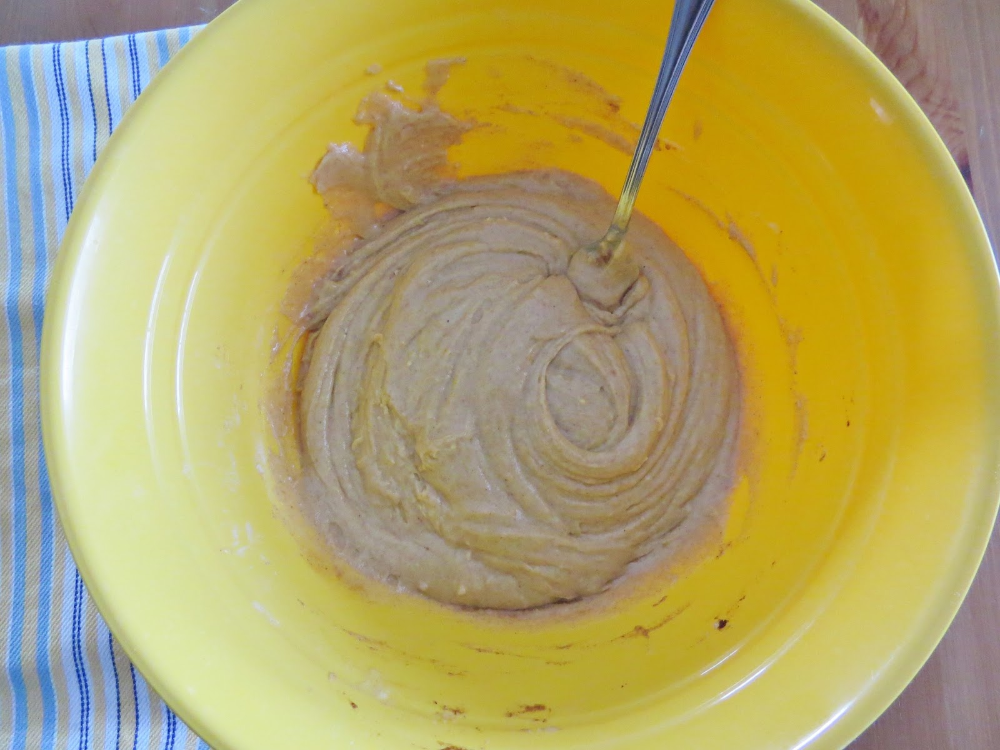
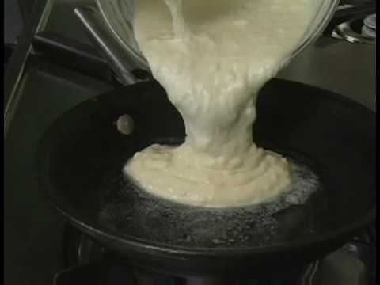
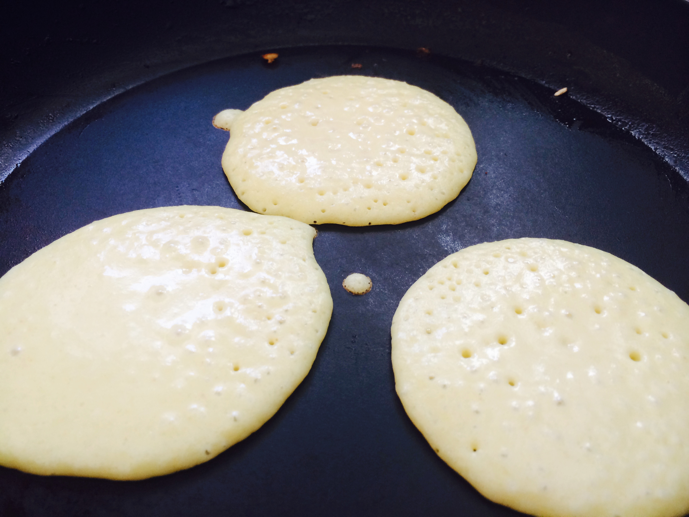

| A Picture to Reference: |
Steps It'll Take: |
|  |
Place the cinnamon, egg, flour and milk into a large bowl and stir, or beat, until there is a mixture leftover. You will need to make sure you have a certain consistency - not too runny and not too clumpy. It should flow like warm honey. |
|  |
Pour the cinnamon mixture onto a hot pan or griddle, making sure to have sprayed with cooking oil or layered with butter. Let this cook for anywhere from three-to-five minutes, depending on your device and its heat setting. |
|  |
Once you begin to see bubbles forming within the batter, you know you're in business. Allow the bubbles to almost, if not completely, cover the batter. This will provide a nice, even layer on the bottom. Flip the pancake and repeat. |